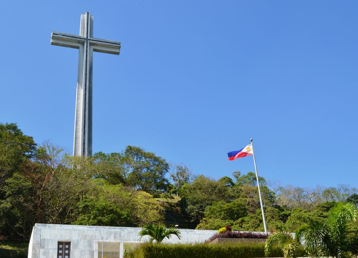
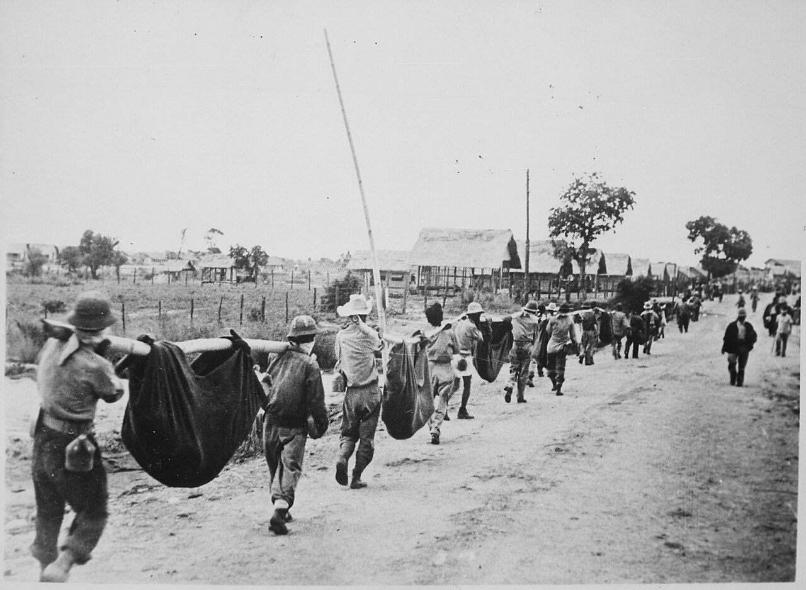
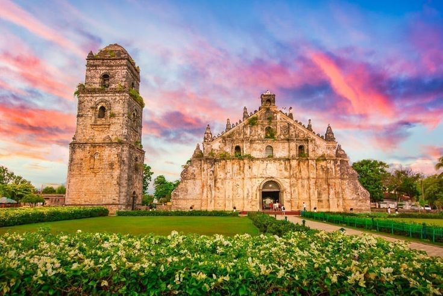
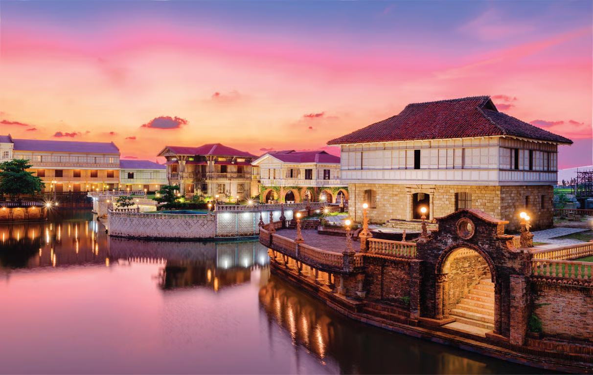
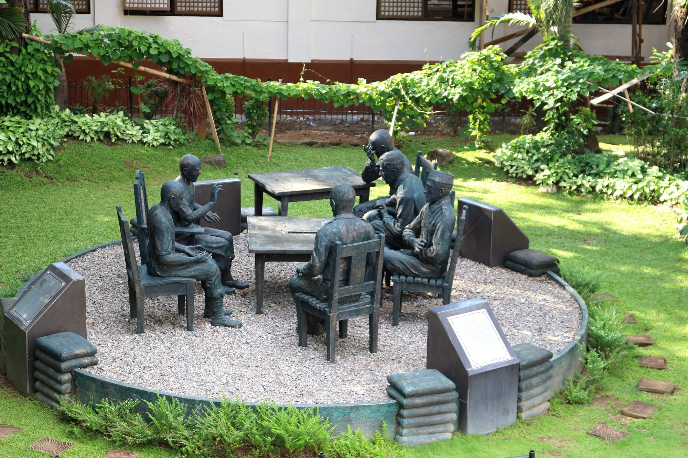

Key Historical Chapters

Dambana ng Kagitingan
The Shrine of Valor stands as a silent witness to bravery.

The Death March
Trace the steps of the heroes from the Zero Kilometer markers.

Abucay Church
One of the oldest churches, witnessing centuries of history.

Las Casas Filipinas
A heritage park featuring restored Spanish-colonial mansions.

Palis Lasa Festival
A vibrant feast celebrating Bataan’s culinary heritage and local flavors.

Surrender Site Marker
A solemn marker recalling the surrender that reshaped history.

Death March Tribute
A solemn monument honoring the endurance of heroes.

Araw ng Mangingisda
A coastal celebration honoring the lifeblood of Bataan’s seas.

Araw ng Kagitingan
A national commemoration honoring courage and sacrifice in Bataan.